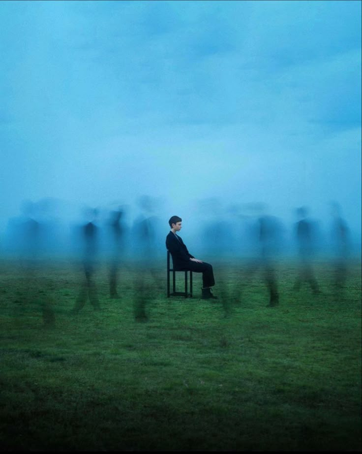

“I feel like I’m drowning in expectations, both my own and everyone else's. Every day feels like a performance, but I’ve forgotten my lines. I keep wondering if I’ll ever figure out what I truly want, or if I’m just trying to fit into someone else’s mold. The weight of pretending is heavier than anyone realizes. I just wish I could find peace in being myself.”
Voice

Star
“I always feel like I'm running out of time, like every moment slipping away is a chance I'll never get back. There's this constant pressure to achieve, to succeed, to be someone worth remembering. But in chasing all these goals, I've lost sight of what genuinely makes me happy. The exhaustion feels endless, but admitting it feels like failure. I just need a break from everything, even if it's only for a little while.”
Echo
“It's been months since we stopped talking, but your absence still echoes through everything. I thought time would heal, but it only sharpens the emptiness. I find myself scrolling through old messages, wondering if you ever do the same. Maybe we were meant to drift apart, but it doesn't stop the hurt. Sometimes I wish I could just”
Glimpse
“Lately, I’ve been catching fleeting moments of happiness, like sunlight slipping through the cracks. It never stays long, but when it’s there, everything feels lighter, almost bearable. I wonder if life is just a collection of these tiny fragments, stitched together by hope. Maybe I'm too focused on chasing something lasting, instead of appreciating what's right in front of me. It’s hard to let go of the longing, but I’m trying.”
100 comments